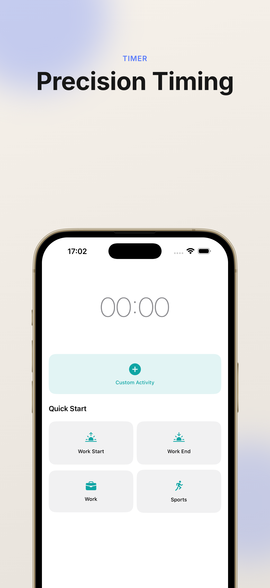
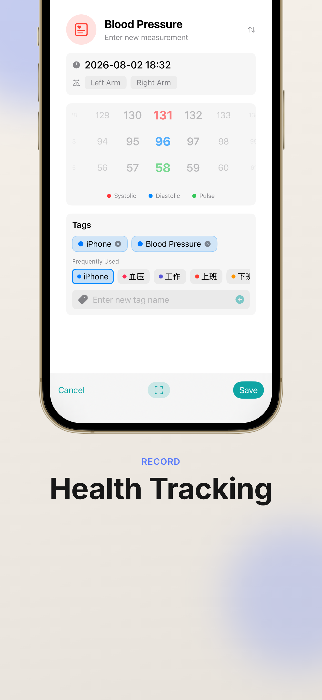

Frequently Asked Questions
Q: How do I get started with TimeAssistant?
A: After downloading and opening the app, you can create your first time record by tapping the "+" button. You can choose between interval recording or time point recording.
Q: How do I use the timer feature?
A: Switch to the Timer tab, set an activity name, and tap "Start" to begin timing. You can pause or stop during timing, and it will be automatically saved when stopped.
Q: How do I create and manage tags?
A: On the Tags page, tap the "+" button to create a new tag. You can set the tag name and color. Tags help you categorize and analyze different types of activities.
Q: How does iCloud sync work?
A: Ensure your device is signed in with your Apple ID and has iCloud enabled. TimeAssistant will automatically sync data across all your devices. You can check sync status in Settings.
Q: How do I export my data?
A: On the tag details page, you can choose to export as PDF or CSV format for backup or viewing in other applications.
Q: How do I record blood pressure data?
A: Select the blood pressure template when adding a record, and enter systolic, diastolic, and pulse data. You can also use the camera feature to directly capture and recognize readings from your blood pressure monitor.



Still need help?
If you have any questions, suggestions, or feedback, please feel free to contact us via email.
contact@9631369.xyz